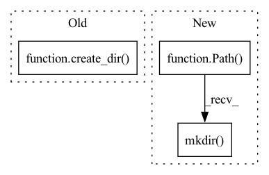

Pattern ID :3068
Before Change
self.device = device
if load_on_init:
model_folder_directory = os.path.dirname(model_path)
create_dir( model_folder_directory)
self.model = load_model(model_path=model_path, device=device, autoshape=True)
else:
self.model = None
After Change
self.model_path = model_path
self.device = device
if load_on_init:
Path(model_path).parents[0].mkdir(parents=True, exist_ok=True)
self.model = load_model(model_path=model_path, device=device, autoshape=True)
else:
self.model = None
In pattern: SUPERPATTERN
Frequency: 5
Non-data size: 3
Instances Fragment ID: 11884663
Project Name: fcakyon/yolov5-pip
Commit Name: d972f314161801cd3c2b37be9fe62289498a4a09
Time: 2021-04-16
Author: 34196005+fcakyon@users.noreply.github.com
File Name: yolov5/helpers.py
M Class Name: YOLOv5
N Class Name: YOLOv5
M Method Name: __init__(4)
N Method Name: __init__(4)
M Parent Class:
N Parent Class:
M File Name: yolov5/helpers.py
N File Name: yolov5/helpers.py
M Start Line: 103
M End Line: 104
N Start Line: 90
N End Line: 90
Before Change
)
if output_dir:
// create output folder if not present
create_dir( output_dir)
// save inference result
save_path = os.path.join(output_dir, file_name + ".png")
cv2.imwrite(save_path, cv2.cvtColor(image, cv2.COLOR_RGB2BGR))
elapsed_time = time.time() - elapsed_timeAfter Change
)
if output_dir:
// create output folder if not present
Path(output_dir).mkdir(parents=True, exist_ok=True)
// save inference result
save_path = os.path.join(output_dir, file_name + ".png")
cv2.imwrite(save_path, cv2.cvtColor(image, cv2.COLOR_RGB2BGR))
elapsed_time = time.time() - elapsed_time Fragment ID: 11884662
Project Name: obss/sahi
Commit Name: 4f788d8cc64f2e05584d06eda717c8207cf5f6ef
Time: 2021-09-02
Author: 34196005+fcakyon@users.noreply.github.com
File Name: sahi/utils/cv.py
M Class Name: AnonimousClass
N Class Name: AnonimousClass
M Method Name: visualize_prediction(10)
N Method Name: visualize_prediction(10)
M Parent Class:
N Parent Class:
M File Name: sahi/utils/cv.py
N File Name: sahi/utils/cv.py
M Start Line: 230
M End Line: 230
N Start Line: 230
N End Line: 230
Before Change
self.durations_in_seconds = durations_in_seconds
def export_visuals(self, export_dir: str):
create_dir( export_dir)
visualize_object_predictions(
image=np.ascontiguousarray(self.image),
object_prediction_list=self.object_prediction_list,
rect_th=1,After Change
self.durations_in_seconds = durations_in_seconds
def export_visuals(self, export_dir: str):
Path(export_dir).mkdir(parents=True, exist_ok=True)
visualize_object_predictions(
image=np.ascontiguousarray(self.image),
object_prediction_list=self.object_prediction_list,
rect_th=1, Fragment ID: 11884665
Project Name: obss/sahi
Commit Name: 4f788d8cc64f2e05584d06eda717c8207cf5f6ef
Time: 2021-09-02
Author: 34196005+fcakyon@users.noreply.github.com
File Name: sahi/prediction.py
M Class Name: PredictionResult
N Class Name: PredictionResult
M Method Name: export_visuals(2)
N Method Name: export_visuals(2)
M Parent Class:
N Parent Class:
M File Name: sahi/prediction.py
N File Name: sahi/prediction.py
M Start Line: 168
M End Line: 168
N Start Line: 168
N End Line: 168
Before Change
export_format: can be specified as "jpg" or "png"
// create output folder if not present
create_dir( output_dir)
// add bbox and mask to image if present
for ind, object_prediction in enumerate(object_prediction_list):
// deepcopy object_prediction_list so that original is not altered
object_prediction = object_prediction.deepcopy()After Change
export_format: can be specified as "jpg" or "png"
// create output folder if not present
Path(output_dir).mkdir(parents=True, exist_ok=True)
// add bbox and mask to image if present
for ind, object_prediction in enumerate(object_prediction_list):
// deepcopy object_prediction_list so that original is not altered
object_prediction = object_prediction.deepcopy() Fragment ID: 11884664
Project Name: obss/sahi
Commit Name: 4f788d8cc64f2e05584d06eda717c8207cf5f6ef
Time: 2021-09-02
Author: 34196005+fcakyon@users.noreply.github.com
File Name: sahi/utils/cv.py
M Class Name: AnonimousClass
N Class Name: AnonimousClass
M Method Name: crop_object_predictions(5)
N Method Name: crop_object_predictions(5)
M Parent Class:
N Parent Class:
M File Name: sahi/utils/cv.py
N File Name: sahi/utils/cv.py
M Start Line: 33
M End Line: 33
N Start Line: 33
N End Line: 33
Before Change
)
if output_dir:
// create output folder if not present
create_dir( output_dir)
// save inference result
save_path = os.path.join(output_dir, file_name + "." + export_format)
cv2.imwrite(save_path, cv2.cvtColor(image, cv2.COLOR_RGB2BGR))
elapsed_time = time.time() - elapsed_timeAfter Change
)
if output_dir:
// create output folder if not present
Path(output_dir).mkdir(parents=True, exist_ok=True)
// save inference result
save_path = os.path.join(output_dir, file_name + "." + export_format)
cv2.imwrite(save_path, cv2.cvtColor(image, cv2.COLOR_RGB2BGR))
elapsed_time = time.time() - elapsed_time Fragment ID: 11884666
Project Name: obss/sahi
Commit Name: 4f788d8cc64f2e05584d06eda717c8207cf5f6ef
Time: 2021-09-02
Author: 34196005+fcakyon@users.noreply.github.com
File Name: sahi/utils/cv.py
M Class Name: AnonimousClass
N Class Name: AnonimousClass
M Method Name: visualize_object_predictions(9)
N Method Name: visualize_object_predictions(9)
M Parent Class:
N Parent Class:
M File Name: sahi/utils/cv.py
N File Name: sahi/utils/cv.py
M Start Line: 310
M End Line: 310
N Start Line: 310
N End Line: 310